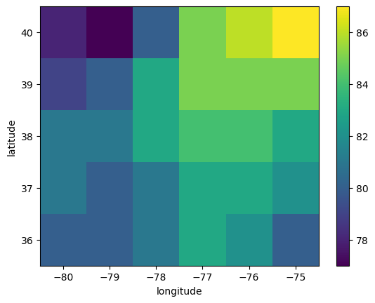
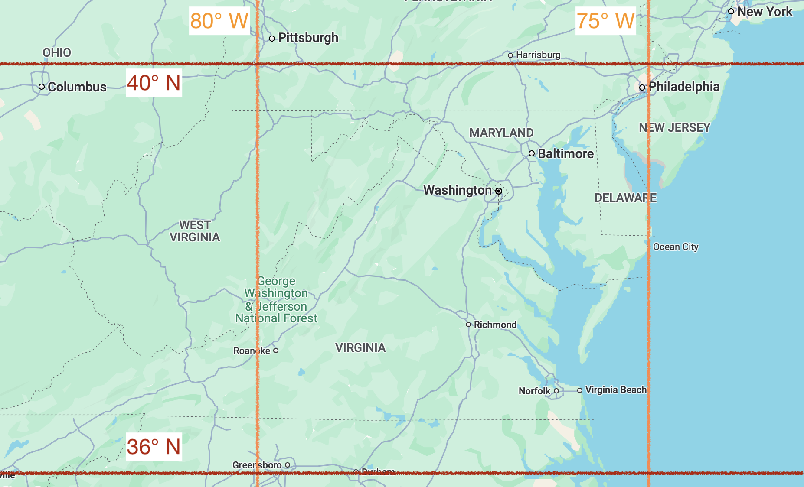
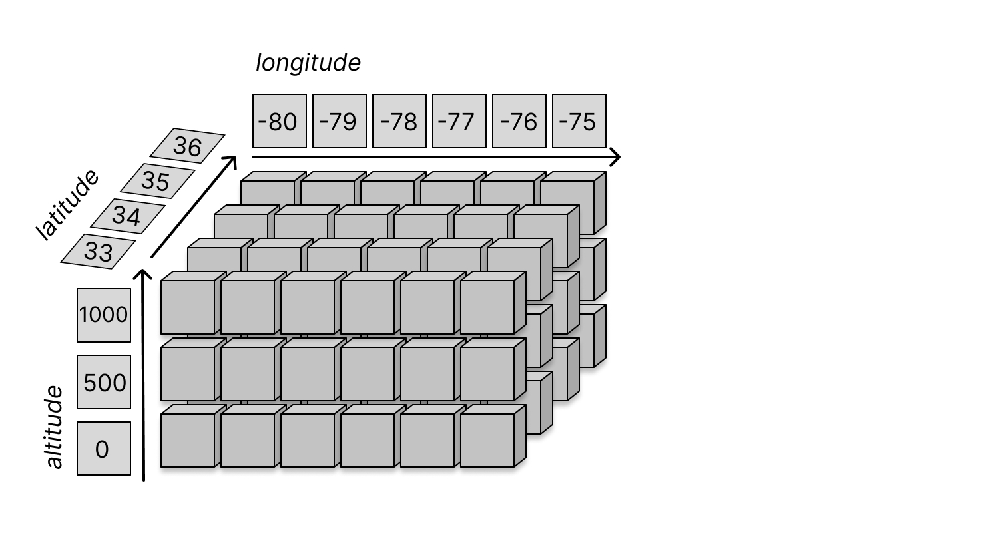
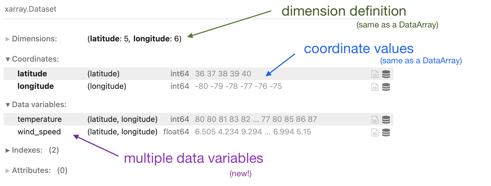

3.1 The xarray Library#
Lesson Content
🗃️ Libraries
Gridded data and
xarrayxarrayDatastructuresIndexing and selecting values
Filepaths
Context#
Today we are getting to our core raster library - xarray. xarray is a great library for working with gridded datasets. It has many built in analysis methods, nice visualization defaults, and it was built by the scientific community. xarray is built on top of another library called numpy. xarray takes the numpy arrays and makes them easier to work with by adding labels to the axes. This is a small change but it has a huge effect on the ease of working with data.
Other xarray tutorials:

🗃️ Libraries#
Today we are going to dig into our first library in Python! A library is a like an “extras” package for a programming language (think Settlers of Catan expansion pack). It is a set of commands that doesn’t automatically come activated when you start Python, but that you can use if you tell Python that you plan to do so. You let Python know you are going to use a library with an import statment. After you do that the additional commands become availble. Let’s try this out with an example from the math library.
# Attempting to use the `math` libray before importing
math.factorial(3)
---------------------------------------------------------------------------
NameError Traceback (most recent call last)
Cell In[1], line 2
1 # Attempting to use the `math` libray before importing
----> 2 math.factorial(3)
NameError: name 'math' is not defined
# Import the Python library
import math
# Attempt #2 to use the `math` libray (after importing)
math.factorial(3)
6
Once we have imported the library we can use the new commands that the library contains. The math library was just an example and it isn’t the focus of this lesson, but if you want you can see a list of math commands here.
Vocabulary
Library: additional coding objects (Ex. functions, data structures) that you can make available to in your notebook by importing them
🌀 More Info: Standard vs. Non-standard Libraries
One large chunk of libraries are together referred to as the Python Standard Library. These libraries are not a part of the “core” language (everything we can do without import statments) but have still been offically accepted into the Python distribution package and are maintained in the same way as the rest of the core language. You can read more here.
There are also libraries which aren’t a part of this designation, and are still widely used and developed, but they are simply not included when you hit the “Download Python” button. Non-standard libraries are maintained by groups of developers outside of the Python Software Foundation and anyone can make one. That includes you!
Data Cubes#
xarray is a library that allows us to manipulate multidimensional data. If you’ve taken linear algebra you might already be familiar with what that means. Multidimensional data is data that is organized using dimensions. Data can be 1-, 2-, or 3-dimensional, and can even be 4-, or 5-dimensional, and higher. Multidimensional data can be difficult to visualize if you haven’t worked with it before, so before diving into code let’s start by understanding multidimensional data visually first.
Let’s start visualizaing a dataset where each number is represented by a little box like this:

From now on every time you see a little box like this is represents a single data value (ex. an value for wind speed, water temperature, soil moisture, \(CO_2\) concentration, etc.)
A one-dimensional dataset would be represented like this:

Notice how the numbers aren’t randomly placed, they are organized by a single dimension. In addition to dimensions we also often talk about the shape of a data array. The shape tells us how many values there are along each dimension of the dataset. The array above has a shape of (9), because there are 9 values.
An example of a 1-dimensional dataset might be time series data from an ocean buoy showing water temperatures at each hour over the course of one day. (For the sake of space there are fewer boxes in the array than there are on the plot, but know that each dot on the plot would correspond to one box in a data array).

This data is one dimensional because it is organized using one coordinate axis, which in this case is time.
If we were to use Python to represent this data we would need to specify one index to get a single value out of the dataset.
# 1D Python data
water_temp = [15, 64, 23, 42, 34]
print("Third temperature value:", water_temp[2])
Third temperature value: 23
Two dimensional data has two dimensions, meaning data is organized using two sets of coordinates.

The array above has a shape of (9, 6) because there are 9 values along the first dimensions and 6 values along the second dimension.
An example of 2D data might be sea surface temperatures over a region of the Pacific Ocean.

In this example the two dimesions are latitude and longitude.
If we were to use Python to represent this data we would need to use two indices to get one value out of the dataset.
# 2D Python data
sst = [[15, 64, 23, 400], [304, 305, 300, 410]]
print("One temperature value:", sst[1][2])
One temperature value: 300
We can continue to make our data into more complex structures by adding additional dimensions. Here is an example of 3-dimensional data.

The array above has the shape (5, 9, 6).
co2 = [[[15, 64, 23, 400], [304, 305, 300, 410]], [[15, 64, 23, 400], [304, 305, 300, 410]]]
print("One CO2 value:", co2[0][1][3])
One CO2 value: 410
Now you may think that is the end of it, since we exist in three dimensions, but in math (and computer science) the concept of a “dimension” can continue into 4th, 5th, 6th dimensions and beyond. It doesn’t make complete sense to visualize these things in space, but from a math and coding perspective we can continue to organize data into structures that can be described using 4, 5, and 6 dimensions.
The Python access would look like:
fourD = [[[[14, 15, 15], [34, 34, 34]], [[14, 15, 15], [34, 34, 34]]], [[[14, 15, 15], [34, 34, 34]], [[14, 15, 15], [34, 34, 34]]]]
print("One CO2 value:", fourD[1][0][1][2])
One CO2 value: 34
Does that long line of a list of a list of a list of a list look pretty ugly and hard to navigate to you? Good. Then you’ll appreciate the benefit of xarray.
Gridded data and xarray#
xarray Data Structures#
xarray allows us to work with labelled, multi-dimensional data. What does that mean? There are two parts:
multi-dimensional - the data is organized into a grid and can have any number of dimensions. For example, data might be organized by latitude, longitude, and altitude (3 dimensions). This is often visually represented as a cube of data
labelled - the cube of data isn’t just any old cube - each dimension has associated values. For example, we know the values of latitude, longitude, and altitude that the data is describing
That’s all a bit abstract, but let’s create some xarray objects to dig more into how this works.
Core Data Structure: DataArray#
The first core xarray data structure is a DataArray. Let’s make a DataArray with some fake data for air temperature. We will need:
values for temperature
we need to know that our data is arranged by
latitudeandlongitudeexactly which latitudes and longitudes our data are showing
To use a library in Python we first need to import it. That’s how you tell Python you want to be able to access those extra “features” that the library has in it. For xarray the import statement cannonically looks like this:
import xarray as xr
Now let’s make a DataArray.
# Data values
air_temps = [
[80, 80, 81, 83, 82, 80], [81, 80, 81, 83, 83, 82], [81, 81, 83, 84, 84, 83],
[79, 80, 83, 85, 85, 85], [78, 77, 80, 85, 86, 87]
]
# Coordinate values
lats = [36, 37, 38, 39, 40]
lons = [-80, -79, -78, -77, -76, -75]
# Assemble the DataArray
temps = xr.DataArray(data=air_temps, dims=['latitude', 'longitude'], coords=[lats, lons],)
Don’t worry too much about every line of the big code block above. You’ll rarely ever need to create your own DataArray, as the most common thing is to open data from a file. More importantly, let’s see what all that code created:
temps
<xarray.DataArray (latitude: 5, longitude: 6)> Size: 240B
array([[80, 80, 81, 83, 82, 80],
[81, 80, 81, 83, 83, 82],
[81, 81, 83, 84, 84, 83],
[79, 80, 83, 85, 85, 85],
[78, 77, 80, 85, 86, 87]])
Coordinates:
* latitude (latitude) int64 40B 36 37 38 39 40
* longitude (longitude) int64 48B -80 -79 -78 -77 -76 -75What has xarray given us? An xarray DataArray. We get a nice output, and notice that it is clickable. We can see in the output that a DataArray has three major components:
data- values for temperaturedims- (short for dimensions) indicates that our data is arranged bylatitudeandlongitudecoords- (short for coordinates) the values for latitude and longitude
The figure below shows where to find these three components in the xarray output. We see that this data is organized by latitude and longitude. The data covers 5 latitudes and 6 longitudes. The exact location of our data is shown in the coordinates, and the observed temperature values are listed in the main data array.

What does the data look like? We can use xarray’s .plot() method to look at the data as a graphic.
temps.plot()
<matplotlib.collections.QuadMesh at 0x7f94b6cac050>

We’ve created a plot of our temperature data! Each box of data is called a pixel and each pixel is colored to show the corresponding temperature value. We can see that the highest tempeatures are in the northeast corner of this plot while the lowest values are in the northwest corner.
And notice 🚨! We don’t just have a random set of 30 temperature values. We have temperature values that represent a certain geographic location. Where is this data located? Where in the world is about \(36-40^\circ\)N and \(75-80^\circ\)W?

Right about here.
So, if we were to summarize the fake data we just made, we could say that we made data showing:
air temperature values over Virginia and Maryland
Summarizing datacube visualization#
In the past few minutes we have now seen three different ways to visualize multidimensional data. We have:
The output from an xarray DataArray
A plot of two dimensional data
The graphical representation from earlier in this lesson
One of these three ways of visualizing may click better for you than others, and that’s great. Going forward we will use a mixture of these representations, but remember that in the end they all represent the same thing: environmental data.

Attributes/Properties#
In the example we have given here we know our dimensions and coordinates because we made the DataArray. But if you open a new dataset you may not be so sure. If you ever need to figure out what the dimenions or coordinates of a DataArray, they can each be accessed using a period ., called dot notation. Accessing information about an object using a . is called accessing an attribute or a property of an object. In the analogy between spoken languages and programming languages, where objects are nouns and functions are verbs, I think of attributes as adjectives.
print('DIMS', temps.dims)
print('COORDS', temps.coords)
print('DATA', temps.data)
DIMS ('latitude', 'longitude')
COORDS Coordinates:
* latitude (latitude) int64 40B 36 37 38 39 40
* longitude (longitude) int64 48B -80 -79 -78 -77 -76 -75
DATA [[80 80 81 83 82 80]
[81 80 81 83 83 82]
[81 81 83 84 84 83]
[79 80 83 85 85 85]
[78 77 80 85 86 87]]
Objects -> Nouns;
Functions -> Verbs;
Attributes/Properties -> Adjectives
Vocabulary
Property or Attribute: Information attached to a data structure that describes it (Ex. the size of an array). Usually accessed with dot notation (my_dataarray.my_property)
dims vs. coords [optional]#
Although they are not the same thing, if this is your first time learning about xarray you can think of them as the same thing for now. In the practice we will look at some examples that will help us get a more intuitive sense for how dimensions and coordinates are different.
The difference between dims and coords can be tricky but time and examples can make that clearer. One thing that can also be helpful is to omit the dims or coords argument from array creation to see how the output changes. Neither argument is required, so feel free to try that on your own.
3D Array#
The process we just went through can be repeated for arrays of increasing size. Here is what a 3D DataArray would look like.
import numpy as np
# Define the data
temperature_3d_values = np.random.randint(0, high=75, size=(3, 4, 6))
# Define the coordinates
altitude = [0, 500, 1000]
lats = [33, 34, 35, 36]
lons = [-122, -121, -120, -119, -118, -117]
# Assemble the DataArray
temperature_3d = xr.DataArray(temperature_3d_values,
dims=['altitude', 'latitude', 'longitude'],
coords=[altitude, lats, lons]
)
temperature_3d
<xarray.DataArray (altitude: 3, latitude: 4, longitude: 6)> Size: 576B
array([[[10, 48, 11, 36, 54, 58],
[65, 55, 41, 27, 64, 51],
[15, 7, 2, 3, 59, 11],
[73, 5, 41, 28, 34, 6]],
[[46, 31, 49, 2, 53, 40],
[52, 63, 67, 31, 1, 48],
[42, 30, 13, 54, 29, 29],
[48, 23, 26, 62, 9, 61]],
[[26, 68, 60, 47, 68, 52],
[22, 34, 55, 27, 6, 21],
[49, 53, 8, 74, 45, 13],
[ 0, 10, 22, 33, 8, 33]]])
Coordinates:
* altitude (altitude) int64 24B 0 500 1000
* latitude (latitude) int64 32B 33 34 35 36
* longitude (longitude) int64 48B -122 -121 -120 -119 -118 -117Or, conceptually:

📝 Check your understanding
The following DataArray contains values for wind speeds. What are the dimensions? What are the coordinates? What is the highest and lowest wind speed in the array?

# wind_speed = np.random.randint(0, high=80, size=(5, 3))
# wind_speed = [[8, 12,7 ], [40, 42, 37], [71, 71, 80,], [106, 98, 111],]
# pressure = [1000, 750, 500, 350]
# lons = [-80, -79, -78]
# wind_speed = xr.DataArray(wind_speed, dims=['pressure', 'longitude'], coords=[pressure, lons])
# wind_speed
Indexing and Selecting Values#
One of the great things about having labelled data is that we can use the labels to extract a smaller amount of data from a larger dataset. This process of extracting some data from a larger amount of data is called subsetting. Subsetting is the process of taking a large dataset and picking out just the bit of data that you need for your analysis. We do this in xarray using the .sel() selection syntax.
As an example, we we could ask the question “What is the air temperature at 37\(^\circ\)N and 19\(^\circ\)E?”
# Get the value of the array where latitude is EQUAL TO 37 and longitude is EQUAL TO -19
temps.sel(latitude=37, longitude=-79)
<xarray.DataArray ()> Size: 8B
array(80)
Coordinates:
latitude int64 8B 37
longitude int64 8B -79Look at that! We found the temperature value at 37\(^\circ\)N and 19\(^\circ\)E – it’s 17\(^\circ\)C.
Now often you want to find not just a single value, but data over a larger area. For example, maybe the data file that you downloaded has data for the whole world but you only want data over the state of California. To achieve that we use a slice().
# Select all the data between (and including) 37 and 39 degrees north
temps.sel(latitude=slice(37, 39))
<xarray.DataArray (latitude: 3, longitude: 6)> Size: 144B
array([[81, 80, 81, 83, 83, 82],
[81, 81, 83, 84, 84, 83],
[79, 80, 83, 85, 85, 85]])
Coordinates:
* latitude (latitude) int64 24B 37 38 39
* longitude (longitude) int64 48B -80 -79 -78 -77 -76 -75
Notice, how does the shape of this dataset compare to the full dataset? Before we had an array of shape 5 x 6, with 5 latitudes and 6 longitudes. It was a 2-dimensional array. Now we still have a 2-dimensional array, but it is a smaller array. We have an array of shape 3 x 6, with 3 latitudes and 6 longitudes.
📝 Check your understanding
What is the shape of the output DataArray in each of the following selections? Use (latitude, longitude) order
1 - temps.sel(latitude=38, longitude=-75)
2 - temps.sel(latitude=0)
3 - temps.sel(longitude=slice(-79, -78))
Subsetting by Index#
Selecting by label is the most common way to use xarray, but sometimes you still want to use an index. When we talked about selecting data in lists we talked about a data index. Indexes let us say “I want the first, second, and third elements”. xarray also lets you select data by index, but the syntax is different. Instead of square brackets we use the .isel() method and we give the names of our dimensions as arguments.
temps.isel(latitude=0, longitude=3).data
array(83)
The code we wrote above says “Please give me the temperature value that corresponds to the 1st latitude and the 4th longitude”.
The return value from indexing is always another DataArray. This is true even if the return has just 1 value in it. At any point you are working with a DataArray you can get the numpy array of the data values using .values or .data.
One great thing to notice about this approach is that we didn’t have to keep track of whether latitude or longitude was the first dimension in the array. We gave latitude and longitude as arguments and xarray knew how to to use that information.
We can see this even more clearly by noticing that we can switch the arguments and get the same result.
temps.isel(longitude=3, latitude=0)
<xarray.DataArray ()> Size: 8B
array(83)
Coordinates:
latitude int64 8B 36
longitude int64 8B -77We don’t have to select using all of the dimensions of the dataset. A graphic representaiton of this select process is shown below.
temps.isel(longitude=3)
<xarray.DataArray (latitude: 5)> Size: 40B
array([83, 83, 84, 85, 85])
Coordinates:
* latitude (latitude) int64 40B 36 37 38 39 40
longitude int64 8B -77
Notice that we started with a 2-dimensional dataset but we get back a 1-dimensional array.
(optional) numpy-like selection syntax#
I’ll point out that xarray does allow you to select data using the same syntax as numpy (square brackes and indexes in a particular order). This is a totally valid way to select data, but I tend to avoid it because it doesn’t take advantage of the convenience that xarray as a library is providing.
temps[0, 3] # returns a DataArray
<xarray.DataArray ()> Size: 8B
array(83)
Coordinates:
latitude int64 8B 36
longitude int64 8B -77temps[:, 0:2]
<xarray.DataArray (latitude: 5, longitude: 2)> Size: 80B
array([[80, 80],
[81, 80],
[81, 81],
[79, 80],
[78, 77]])
Coordinates:
* latitude (latitude) int64 40B 36 37 38 39 40
* longitude (longitude) int64 16B -80 -79temps[0, 3].data # returns a numpy array
array(83)
📝 Check your understanding
What would be the output sst values of the following lines of code?
sst.isel(latitude=2, longitude=1)sst.sel(latitude=38, longitude=-21)sst.isel(latitude=2).sel(longitude=-21)
Core Data Structure: Dataset#
The other core data structure in xarray is a Dataset, which is a group of DataArrays.
To look at a Dataset let’s go back to our example of air temperature in Virginia and Maryland. Let’s say that in addition to air temperature temperature we also have data for humidity.
# Create DataArray for chlorophyll-a
windspeed_values = np.random.uniform(4, high=13, size=(5, 6))
# Assemble the Dataset
air_dataset = xr.Dataset(
data_vars={"temperature": temps, "wind_speed": (("latitude", "longitude"), windspeed_values)}
)
air_dataset
<xarray.Dataset> Size: 568B
Dimensions: (latitude: 5, longitude: 6)
Coordinates:
* latitude (latitude) int64 40B 36 37 38 39 40
* longitude (longitude) int64 48B -80 -79 -78 -77 -76 -75
Data variables:
temperature (latitude, longitude) int64 240B 80 80 81 83 82 ... 80 85 86 87
wind_speed (latitude, longitude) float64 240B 7.447 8.946 ... 8.354 8.245In the output we see that we have a new section: Data Variables where both temperature and wind speed are listed! The coordinates and dimensions are also maintained.

Again, I’m not explaining in detail the line where I created the Dataset because in real life you likely won’t be creating your own datasets. Instead you’ll be reading in data that someone else collected. Therefore, at this point, the most important thing to be comfortable with is being able to look at the output of a created Dataset and understand what it contains.
You can access different DataArrays within the Dataset with either [''] sytax or . syntax.
air_dataset['temperature']
<xarray.DataArray 'temperature' (latitude: 5, longitude: 6)> Size: 240B
array([[80, 80, 81, 83, 82, 80],
[81, 80, 81, 83, 83, 82],
[81, 81, 83, 84, 84, 83],
[79, 80, 83, 85, 85, 85],
[78, 77, 80, 85, 86, 87]])
Coordinates:
* latitude (latitude) int64 40B 36 37 38 39 40
* longitude (longitude) int64 48B -80 -79 -78 -77 -76 -75air_dataset.temperature
<xarray.DataArray 'temperature' (latitude: 5, longitude: 6)> Size: 240B
array([[80, 80, 81, 83, 82, 80],
[81, 80, 81, 83, 83, 82],
[81, 81, 83, 84, 84, 83],
[79, 80, 83, 85, 85, 85],
[78, 77, 80, 85, 86, 87]])
Coordinates:
* latitude (latitude) int64 40B 36 37 38 39 40
* longitude (longitude) int64 48B -80 -79 -78 -77 -76 -75Real Data#
The small dataset we made manually in the first part of this notebook is quite useful for learning. Usually, though, you won’t be making your own data, you’ll be opening other datasets. Let’s try an example of that using a local file. Here we open up the dataset NASA MUR. This is a sea surface temperature dataset.
We are opening up a MUR file stored locally, but you could re-download this file yourself from earthdata search.
One command to open a datasets is xr.open_dataset(), shown below.
import xarray as xr
sst = xr.open_dataset(
'./data/20250503090000-JPL-L4_GHRSST-SSTfnd-MUR25-GLOB-v02.0-fv04.2.nc'
)
sst
<xarray.Dataset> Size: 37MB
Dimensions: (time: 1, lat: 720, lon: 1440)
Coordinates:
* time (time) datetime64[ns] 8B 2025-05-03T09:00:00
* lat (lat) float32 3kB -89.88 -89.62 -89.38 ... 89.62 89.88
* lon (lon) float32 6kB -179.9 -179.6 -179.4 ... 179.6 179.9
Data variables:
analysed_sst (time, lat, lon) float64 8MB ...
analysis_error (time, lat, lon) float64 8MB ...
mask (time, lat, lon) float32 4MB ...
sea_ice_fraction (time, lat, lon) float64 8MB ...
sst_anomaly (time, lat, lon) float64 8MB ...
Attributes: (12/54)
Conventions: CF-1.7, ACDD-1.3
title: Daily 0.25-degree MUR SST, Interim near-real-...
summary: A low-resolution version of the MUR SST analy...
keywords: Oceans > Ocean Temperature > Sea Surface Temp...
keywords_vocabulary: NASA Global Change Master Directory (GCMD) Sc...
standard_name_vocabulary: NetCDF Climate and Forecast (CF) Metadata Con...
... ...
publisher_name: GHRSST Project Office
publisher_url: https://www.ghrsst.org
publisher_email: gpc@ghrsst.org
file_quality_level: 3
metadata_link: http://podaac.jpl.nasa.gov/ws/metadata/datase...
acknowledgment: Please acknowledge the use of these data with...A new thing you will notice about this real dataset is that it has Attributes. Attributes are information about the data that isn’t actually the data itself. These are also called metadata. Metadata is data about your data, but it isn’t the actual data. Datasets and DataArrays can both have attributes.
Additionally, the dataset is large enough that not all the values can be shown in the output. When this happens xarray leaves some values out and denotes that with .... You can see an example of this in the lat coordiante, where the first and last two latitudes are shown with ... in the middle to show you that some data was left out.
Vocabulary
Metadata: information that describes your data, but isn’t the actual data values
📝 Check your understanding
Describe the data we just opened. Answer:
What is the data structure?
How many dimensions does it have and what is the shape?
How many variables are there? What are they?
What geographic area is covered by this dataset? On what date(s) was data captured?
Filepaths#
Your computer is organized hierarchically.

Figure from ResearchGate
The other part of that data loading statement to take note is the './data/20250503090000-JPL-L4_GHRSST-SSTfnd-MUR25-GLOB-v02.0-fv04.2.nc' part. This is called the filepath and it is a string that describes the location of the data that you want to open. A few pieces of the anatomy of a filepath to notice:
/- forward slashes signal that you have entered a new folder. (Windows machines natively use a back slash\, but the Anaconda powershell can handle either).nc- this is the file extension, which tells us what type of file format the data is stored in an informs us how we open it.- the period at the beginning tells the computer to start looking for data in the same place that the code is being run in.
Choosing to start your filepath with a . is called specificying a relative filepath, because you are telling the computer to start looking for the file relative to where the file is being run. If you move this file to another place on your computer and don’t move the data with it the import statment won’t work anymore. The alternative to a relative filepath is an aboslute filepath, in which case you start your file path at the very tippy top of your computer’s organizational structure (the root directory).
Other vocab notes:
directory is the same thing as a folder.
To loop back to our example, we put together our filepath by defining the following directions for our computer:
start by specifing the current directory as the starting point:
.go into the data folder:
./datachoose the file named 20250503090000-JPL-L4_GHRSST-SSTfnd-MUR25-GLOB-v02.0-fv04.2.nc:
'./data/20250503090000-JPL-L4_GHRSST-SSTfnd-MUR25-GLOB-v02.0-fv04.2.nc'
🎉 And there we have our file
Vocabulary
Filepath: A string that describes the location of a file on a computer. Filepath can be either relative, with respect to a particular file, or absolute, with respect to the highest file in the file structure.
📝 Check your understanding
Say you are working in the folder structure shown in the image above.
What is the absolute relative filepath from the code file PARAMETER2.R to the data file CountryDataset?
Inspecting the data#
Right after I open the dataset the first thing I almost always do it plot it. That helps me orient to the data and confirm that what I think is present is indeed present. We can do this in xarray by running .plot()` on a DataArray.
sst.plot()
---------------------------------------------------------------------------
ValueError Traceback (most recent call last)
Cell In[31], line 1
----> 1 sst.plot()
File ~/envs/sarp_docs2/lib/python3.13/site-packages/xarray/plot/accessor.py:921, in DatasetPlotAccessor.__call__(self, *args, **kwargs)
920 def __call__(self, *args, **kwargs) -> NoReturn:
--> 921 raise ValueError(
922 "Dataset.plot cannot be called directly. Use "
923 "an explicit plot method, e.g. ds.plot.scatter(...)"
924 )
ValueError: Dataset.plot cannot be called directly. Use an explicit plot method, e.g. ds.plot.scatter(...)
Oops, an error. Let’s look at the error we got: ValueError: Dataset.plot cannot be called directly. Reading error messages is a big part of programming. You may not understand every bit of an error message, but it’s good to practice extracting a big idea from the error. Here we see that xarray doesn’t like that we have given the .plot() method a Dataset. What if we gave it a DataArray instead?
Let’s extract the analysed_sst variable:
sst['analysed_sst']
<xarray.DataArray 'analysed_sst' (time: 1, lat: 720, lon: 1440)> Size: 8MB
[1036800 values with dtype=float64]
Coordinates:
* time (time) datetime64[ns] 8B 2025-05-03T09:00:00
* lat (lat) float32 3kB -89.88 -89.62 -89.38 -89.12 ... 89.38 89.62 89.88
* lon (lon) float32 6kB -179.9 -179.6 -179.4 -179.1 ... 179.4 179.6 179.9
Attributes:
long_name: analysed sea surface temperature
standard_name: sea_surface_foundation_temperature
coverage_content_type: physicalMeasurement
units: kelvin
valid_min: -32767
valid_max: 32767
comment: Interim near-real-time (nrt) version using Multi-...
source: MODIS_T-JPL, MODIS_A-JPL, AMSR2-REMSS, AVHRRMTB_G...Notice that this is now a DataArray. Now let’s try the .plot() again.
sst['analysed_sst'].plot()
<matplotlib.collections.QuadMesh at 0x7f446de1d450>

What a lovely dataset! 🙂 🌊 🌡
Subsetting#
What if we just wanted a small section of that dataset? For example, just the Atlantic? We can use the .sel() notation along with the desired latitudes and longitudes to zoom into just that data, just as we did in the example earlier in the notebook.
sst['analysed_sst']
<xarray.DataArray 'analysed_sst' (time: 1, lat: 720, lon: 1440)> Size: 8MB
[1036800 values with dtype=float64]
Coordinates:
* time (time) datetime64[ns] 8B 2025-05-03T09:00:00
* lat (lat) float32 3kB -89.88 -89.62 -89.38 -89.12 ... 89.38 89.62 89.88
* lon (lon) float32 6kB -179.9 -179.6 -179.4 -179.1 ... 179.4 179.6 179.9
Attributes:
long_name: analysed sea surface temperature
standard_name: sea_surface_foundation_temperature
coverage_content_type: physicalMeasurement
units: kelvin
valid_min: -32767
valid_max: 32767
comment: Interim near-real-time (nrt) version using Multi-...
source: MODIS_T-JPL, MODIS_A-JPL, AMSR2-REMSS, AVHRRMTB_G...sst['analysed_sst'].sel(lat=slice(5, 65), lon=slice(-85, -36))
<xarray.DataArray 'analysed_sst' (time: 1, lat: 240, lon: 196)> Size: 376kB
[47040 values with dtype=float64]
Coordinates:
* time (time) datetime64[ns] 8B 2025-05-03T09:00:00
* lat (lat) float32 960B 5.125 5.375 5.625 5.875 ... 64.38 64.62 64.88
* lon (lon) float32 784B -84.88 -84.62 -84.38 ... -36.62 -36.38 -36.12
Attributes:
long_name: analysed sea surface temperature
standard_name: sea_surface_foundation_temperature
coverage_content_type: physicalMeasurement
units: kelvin
valid_min: -32767
valid_max: 32767
comment: Interim near-real-time (nrt) version using Multi-...
source: MODIS_T-JPL, MODIS_A-JPL, AMSR2-REMSS, AVHRRMTB_G...Look at the output above. Can you see that it is smaller? (Hint: check the size of the lat and lon dimensions)
Want another way to double check that we selected just the Atlantic Ocean? Try plotting the data:
sst['analysed_sst'].sel(lat=slice(5, 65), lon=slice(-85, -36)).plot()
<matplotlib.collections.QuadMesh at 0x7f446dd25950>

[optional] Connecting it back: Arrays of Data#
This section draws a connection between numpy arrays and xarray DataArrays. Consider reading this section if you already know what a numpy array is.
xarray provides labels around numpy data arrays. numpy arrays have some similarities to the lists we talked about yesterday, but they differ in a few ways:
numpyarrays usually contain values that are all of the same typenumpyarrays can have multiple dimensionsnumpyarrays are highly optimized for performance
Let’s start by making a small array.
import numpy as np
my_first_array = np.array([[1, 2, 3], [3, 4, 5], [6, 7, 8], [9, 10, 11]])
my_first_array
array([[ 1, 2, 3],
[ 3, 4, 5],
[ 6, 7, 8],
[ 9, 10, 11]])
There we have it, a small array! The array has 2 dimensions, which we can see by checking the shape attribute of an array.
my_first_array.shape
(4, 3)
You can index an array using the same syntax as a list. The biggest change from a list to an array is now that we have multiple dimensions we can use multiple indices.
my_first_array[0, 1]
2
How did we know which number should come first? We have to keep track on our own about what is being represented on each axis. The index goes in row, column order, so my_first_array[0, 1] and my_first_array[1, 0] do no return the same result.
Additionally, we can choose to index by just 1 of the 2 dimensions. This will return an array with more than 1 number in it.
my_first_array[1]
array([3, 4, 5])
xarray provides an extra layer of detail on top of a numpy array. With numpy arrays you need to keep track of what each axis represents (ex. time, latitute, elevation). With xarray you can ask for elements based on the names of each axis
# Getting the element at 30 deg N and 50 deg W in numpy
# TODO not complete
array = np.array([[4, 6, 3], [6, 2, 3]])
📝 Check your understanding
Consider the following array called pressure.
pressure = np.array([[[1, 2], [3, 4]], [[5, 6], [7, 8]], [[9, 10], [11, 12]])
Write a line of code to programatically determine how many dimensions the array has.
📝 Check your understanding
Consider the following operation on the pressure array.
pressure[1]
How many dimensions will the resulting data array have? Consider the number of indexes we are using.
a) 0
b) 1
c) 2
d) 3
e) 4
numpy is a great tool for dealing with data in multiple dimensions. It can get to be cumbersome, however, to keep track of indexes once you have 2, 3, 4+ dimensions. To help us with this part, we switch to xarray.